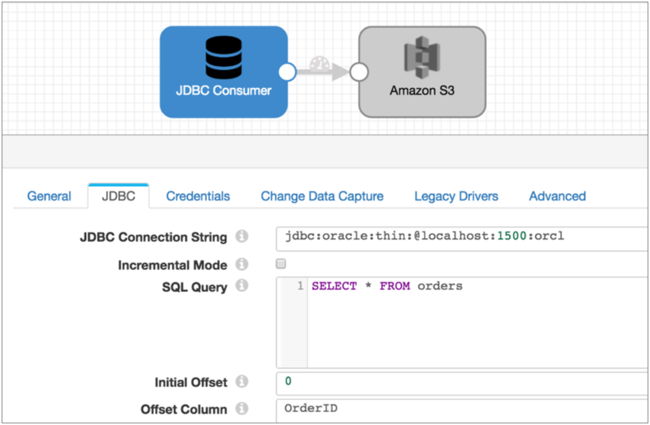
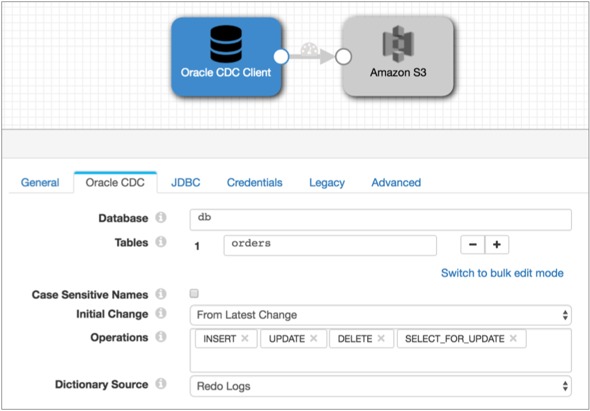

Oracle CDC Client
The Oracle CDC Client processes change data capture (CDC) information provided by Oracle LogMiner redo logs. Use Oracle CDC Client to process data from Oracle version 12c.
When needed, you can use a separate pipeline with the JDBC Query Consumer or JDBC Multitable Consumer origin to read existing data before you start a pipeline with Oracle CDC Client.
Oracle CDC Client processes data based on the commit number, in ascending order.
To read the redo logs, Oracle CDC Client requires the LogMiner dictionary. The origin can use the dictionary in redo logs or in an online catalog. When using the dictionary in redo logs, the origin captures and adjusts to schema changes. The origin can also generate events when using redo log dictionaries.
The origin can create records for the INSERT, UPDATE, SELECT_FOR_UPDATE, and DELETE operations for one or more tables in a database. You can select the operations that you want to use. The origin also includes CDC and CRUD information in record header attributes so generated records can be easily processed by CRUD-enabled destinations. For an overview of Data Collector changed data processing and a list of CRUD-enabled destinations, see Processing Changed Data.
When you configure Oracle CDC Client, you configure change data capture details, such as the schema and tables to read from, how to read the initial change, the dictionary source location, and the operations to include. You also specify the transaction window and LogMiner session windows to use.
You can configure the origin to buffer records locally rather than using database buffers. When enabling this option, perform the local buffer prerequisite task and specify the action to take for uncommitted transactions.
You can specify the behavior when the origin encounters an unsupported data type, and you can configure the origin to pass null values when it receives them from supplemental logging data.
You also specify JDBC connection information and user credentials. If the schema was created in a pluggable database, state the pluggable database name. You can configure custom properties that the driver requires.
To use a JDBC version older than 4.0, you can specify the driver class name and define a health check query.
LogMiner Dictionary Source
LogMiner provides dictionaries to help process redo logs. LogMiner can store dictionaries in several locations.
- Online catalog - Use the online catalog when table structures are not expected to change.
- Redo logs - Use redo logs when table structures are expected to change. When
reading the dictionary from redo logs, the Oracle CDC Client origin determines
when schema changes occur and refreshes the schema that it uses to create
records. The origin can also generate events for each DDL it reads in the redo
logs. Important: When using the dictionary in redo logs, make sure to extract the latest dictionary to the redo logs each time table structures change. For more information, see Task 4. Extract a Log Miner Dictionary (Redo Logs) .
Note that using the dictionary in redo logs can have significantly higher latency than using the dictionary in the online catalog. But using the online catalog does not allow for schema changes.
For more information about dictionary options and configuring LogMiner, see the Oracle LogMiner documentation.
Oracle CDC Client Prerequisites
- Enable LogMiner.
- Enable supplemental logging for the database or tables.
- Create a user account with the required roles and privileges.
- To use the dictionary in redo logs, extract the Log Miner dictionary.
- Install the Oracle JDBC driver.
Task 1. Enable LogMiner
LogMiner provides redo logs that summarize database activity. The origin uses these logs to generate records.
- Log into the database as a user with DBA privileges.
- Check the database logging
mode:
select log_mode from v$database;
If the command returns ARCHIVELOG, you can skip to Task 2.
If the command returns NOARCHIVELOG, continue with the following steps:
- Shut down the database:
shutdown immediate;
- Start up and mount the database:
startup mount;
- Configure enable archiving and open the
database:
alter database archivelog; alter database open;
Task 2. Enable Supplemental Logging
To retrieve data from redo logs, LogMiner requires supplemental logging for the database or tables.
Enable at least primary key or "identification key" logging at a table level for each table that you want to use. With identification key logging, records include only the primary key and changed fields.
Due to an Oracle known issue, to enable supplemental logging for a table, you must first enable minimum supplemental logging for the database.
- To verify if supplemental logging is enabled for the database, run the following
command:
SELECT supplemental_log_data_min, supplemental_log_data_pk, supplemental_log_data_all FROM v$database;
If the command returns Yes or Implicit for all three columns, then supplemental logging is enabled with both identification key and full supplemental logging. You can skip to Task 3.
If the command returns Yes or Implicit for the first two columns, then supplemental logging is enabled with identification key logging. If this is what you want, you can skip to Task 3.
- Enable identification key or full supplemental logging. For multitenant databases, best practice is to enable logging for the container for the tables, rather than the entire database. You can use the following command first to apply the changes to just the container:You can enable identification key or full supplemental logging to retrieve data from redo logs. You do not need to enable both:
ALTER SESSION SET CONTAINER=<pdb>;
- To enable identification key logging
- You can enable identification key logging for individual tables or all tables in the database:
-
- For individual tables
Use the following commands to enable minimal supplemental logging for the database, and then enable identification key logging for each table that you want to use:
ALTER DATABASE ADD SUPPLEMENTAL LOG DATA;
ALTER TABLE <schema name>.<table name> ADD SUPPLEMENTAL LOG DATA (PRIMARY KEY) COLUMNS;
- For all tables
Use the following command to enable identification key logging for the entire database:
ALTER DATABASE ADD SUPPLEMENTAL LOG DATA (PRIMARY KEY) COLUMNS;
- For individual tables
- To enable full supplemental logging
- You can enable full supplemental logging for individual tables or all tables in the database:
-
-
For individual tables
Use the following commands to enable minimal supplemental logging for the database, and then enable full supplemental logging for each table that you want to use:ALTER DATABASE ADD SUPPLEMENTAL LOG DATA;
ALTER TABLE <schema name>.<table name> ADD SUPPLEMENTAL LOG DATA (ALL) COLUMNS;
For all tables
Use the following command to enable full supplemental logging for the entire database:ALTER DATABASE ADD SUPPLEMENTAL LOG DATA (ALL) COLUMNS;
-
- To submit the changes:
ALTER SYSTEM SWITCH LOGFILE;
Task 3. Create a User Account
Create a user account to use with the Oracle CDC Client origin. You need the account to access the database through JDBC.
- Oracle 12c multitenant databases
- For multitenant Oracle 12c databases, create a common user account. Common user accounts are created in cdb$root and must use the convention: c##<name>.
-
- Log into the database as a user with DBA privileges.
- Create the common user
account:
ALTER SESSION SET CONTAINER=cdb$root; CREATE USER <user name> IDENTIFIED BY <password> CONTAINER=all; GRANT create session, alter session, set container, select any dictionary, logmining, execute_catalog_role TO <username> CONTAINER=all; ALTER SESSION SET CONTAINER=<pdb>; GRANT select on <db>.<table> TO <user name>;
Repeat the final command for each table that you want to use.
-
When you configure the origin, use this user account for the JDBC credentials. Use the entire user name, including the "c##", as the JDBC user name.
- Oracle 12c standard databases
- For standard Oracle 12c databases, create a user account with the necessary
privileges:
- Log into the database as a user with DBA privileges.
- Create the user
account:
CREATE USER <user name> IDENTIFIED BY <password>; GRANT create session, alter session, select any dictionary, logmining, execute_catalog_role TO <username>; GRANT select on <db>.<table> TO <user name>;
Repeat the final command for each table that you want to use.
-
When you configure the origin, use this user account for the JDBC credentials.
Task 4. Extract a Log Miner Dictionary (Redo Logs)
When using redo logs as the dictionary source, you must extract the Log Miner dictionary to the redo logs before you start the pipeline. Repeat this step periodically to ensure that the redo logs that contain the dictionary are still available.
Oracle recommends that you extract the dictionary only at off-peak hours since the extraction can consume database resources.
EXECUTE DBMS_LOGMNR_D.BUILD(OPTIONS=> DBMS_LOGMNR_D.STORE_IN_REDO_LOGS);
ALTER SESSION SET CONTAINER=cdb$root; EXECUTE DBMS_LOGMNR_D.BUILD(OPTIONS=> DBMS_LOGMNR_D.STORE_IN_REDO_LOGS);
Task 5. Install the Driver
The Oracle CDC Client origin connects to Oracle through JDBC. You cannot access the database until you install the required driver.
Install the Oracle JDBC driver for the Oracle database version that you use. For more information, see Install External Libraries.
Initial Change
The initial change is the point in the LogMiner redo logs where you want to start processing. When you start the pipeline, Oracle CDC Client starts processing from the specified initial change and continues until you stop the pipeline.
Note that Oracle CDC Client processes only change capture data. If you need existing data, you might use a JDBC Query Consumer or a JDBC Multitable Consumer in a separate pipeline to read table data before you start an Oracle CDC Client pipeline.
- From the latest change
- The origin processes all changes that occur after you start the pipeline.
- From a specified datetime
- The origin processes all changes that occurred at the specified datetime and later. Use the following format: DD-MM-YYYY HH24:MI:SS.
- From a specified system change number (SCN)
- The origin processes all changes that occurred in the specified SCN and later. when using the specified SCN, the origin starts processing with the timestamp associated with the SCN.
- Typically, a database admin can provide the SCN to use.
Example
You want to process all existing data in the Orders table and then capture changed data, writing all data to Amazon S3. To read the existing data, you use a pipeline with the JDBC Query Consumer and Amazon S3 destination as follows:

Once all existing data is read, you stop the JDBC Query Consumer pipeline and start the following Oracle CDC Client pipeline. This pipeline is configured to pick up changes that occur after you start the pipeline, but if you wanted to prevent any chance of data loss, you could configure the initial change for an exact datetime or earlier SCN:

Choosing Buffers
When processing data, the Oracle CDC Client can use Oracle LogMiner buffers or buffer data locally, on the Data Collector machine:
- Oracle LogMiner buffers
- By default, when processing data, the Oracle CDC Client requests data from Oracle LogMiner for a particular time period. LogMiner then buffers all transactions for that time period for all tables in the database, rather than only the tables needed by the origin.
- LogMiner keeps the transaction information in the buffers until it reads commits in the logs, then it passes the committed data to the Oracle CDC Client origin.
- Depending on the size and number of the transactions and the time period being buffered, buffering the transactions can monopolize the PGA, the private memory region for the Oracle server process.
- Use LogMiner buffers when you do not expect the volume of transactions to overtax Oracle resources.
- Local buffers
-
When using local buffers, the origin requests the transactions for the relevant tables and time period. The origin buffers the resulting LogMiner redo SQL statements until it verifies a commit for a transaction. After seeing a commit, it parses and processes the committed data.
The origin can buffer the redo SQL statements completely in memory or write them primarily to disk while using a small amount of memory for tracking.
Use local buffers to process large transactions or to avoid monopolizing the Oracle PGA. Buffer information in memory for better performance when Data Collector resources allow. Buffer information to disk to avoid monopolizing Data Collector resources.
Local Buffer Resource Requirements
Before using local buffers, you should verify that the allocated resources are sufficient for the needs of the pipeline.
- In memory
- When buffering in memory, the origin buffers the LogMiner redo SQL statements returned by Oracle. It processes the data after receiving a commit for the statement.
- Before buffering in memory, increase the Data Collector Java heap size to accommodate the information that you expect the pipeline to receive.
- Use the following equation to estimate the Java heap size requirements:
-
Required Memory = (L * (30 + S) * T * 1.5) bytes
- L - Maximum number of statements LogMiner generates for each
transaction.
Each changed row generates one statement with all field names and values.
- S - Maximum length in characters of each redo SQL statement
generated by LogMiner, including all field names and values.
For example, the following SQL statement contains 92 characters, including spaces and punctuation.
insert into "SYS"."Y"("ID","D") values ('690054',TO_TIMESTAMP('2017-07-18 02:00:00.389390')) - T - Maximum number of transactions in flight for the tables at any given time.
- L - Maximum number of statements LogMiner generates for each
transaction.
- 30 represents the number of bytes in the statement ID, which is also stored.
- For information about setting the Data Collector heap size, see Java Heap Size.
- To disk
- When buffering to disk, the origin stores only the statement ID for each SQL query in memory. Then it saves the queries to disk.
- Note that when buffering to disk, Data Collector clears the buffered data when the pipeline starts and stops. When you restart a pipeline, Data Collector uses the last-saved offset unless you reset the origin.
- Before buffering to disk, ensure that enough space is available on the local disk. You might also increase the Data Collector Java heap size, but to a lesser degree than when buffering fully in memory.
- Use the following calculation to determine the amount of disk space that the
pipeline
requires:
Required Disk Space = (L * S * T * 1.5) bytes
- L - Maximum number of statements LogMiner generates for each
transaction.
Each changed row generates one statement with all field names and values.
- S - Maximum length in characters of each redo SQL statement
generated by LogMiner, including all field names and values. For example, the following SQL statement contains 92 characters, including spaces and punctuation.
insert into "SYS"."Y"("ID","D") values ('690054',TO_TIMESTAMP('2017-07-18 02:00:00.389390')) - T - Maximum number of transactions in flight for the tables at any given time.
- L - Maximum number of statements LogMiner generates for each
transaction.
- Use the following equation to estimate the Java heap size required by the pipeline:
-
Required Memory = (L * T * 30 * 1.5) bytes
- L - Maximum number of statements LogMiner generates for each
transaction.
Each changed row generates one statement with all field names and values.
- T: Maximum number of transactions in flight for the tables at any given time.
- L - Maximum number of statements LogMiner generates for each
transaction.
- For information about setting the Data Collector heap size, see Java Heap Size.
Uncommitted Transaction Handling
When using local buffers, you can configure how the Oracle CDC Client origin handles old uncommitted transactions. Old transactions are those that are older than the current transaction window.
By default, the origin processes old committed transactions. It converts each LogMiner redo SQL statement to a record and passes the record to the stage for error handling.
If you don't need the error records, you can configure the origin to discard uncommitted transactions. This also reduces the overhead used to generate the error records.
Include Nulls
When the Oracle LogMiner performs full supplemental logging, the resulting data includes all columns in the table with null values where no changes occurred. When the Oracle CDC Client processes this data, by default, it ignores null values when generating records.
You can configure the origin to include the null values in the record. You might need to include the null values when the destination system has required fields. To include null values, enable the Include Nulls property on the Oracle CDC tab.
Unsupported Data Types
You can configure how the origin handles records that contain unsupported data types. The origin can perform the following actions:
- Pass the record to the pipeline without the unsupported data types.
- Pass the record to error without the unsupported data types.
- Discard the record.
- Array
- Blob
- Clob
- Datalink
- Distinct
- Java Object
- Nclob
- Other
- Ref
- Ref Cursor
- SQLXML
- Struck
- Timestamp with Timezone
- Time with Timezone
Generated Records
The origin generates records differently based on the Oplog operation type and the logging enabled for the database and tables. It also includes CDC and CRUD information in record header attributes.
| Oplog Operation | Identification/Primary Key Logging Only | Full Supplemental Logging |
|---|---|---|
| INSERT | All fields that contain data, ignoring fields with null values. | All fields. |
| UPDATE | Primary key field and fields with updated values. | All fields. |
| SELECT_FOR_ UPDATE | Primary key field and fields with updated values. | All fields. |
| DELETE | Primary key field. | All fields. |
CRUD Operation Header Attributes
- sdc.operation.type
- The Oracle CDC Client evaluates the Oplog operation type associated with each entry that it processes and, when appropriate, it writes the operation type to the sdc.operation.type record header attribute.
- The origin uses the following values in the sdc.operation.type record header
attribute to represent the operation type:
- 1 for INSERT
- 2 for DELETE
- 3 for UPDATE and SELECT_FOR_UPDATE
-
If you use a CRUD-enabled destination in the pipeline such as JDBC Producer or Kudu, the destination can use the operation type when writing to destination systems. When necessary, you can use an Expression Evaluator or scripting processors to manipulate the value in the sdc.operation.type header attribute. For an overview of Data Collector changed data processing and a list of CRUD-enabled destinations, see Processing Changed Data.
- When using CRUD-enabled destinations, the destination looks for the operation type in the sdc.operation.type attribute before checking the oracle.cdc.operation attribute.
- oracle.cdc.operation
- The Oracle CDC Client also writes the Oplog CRUD operation type to the oracle.cdc.operation record header attribute. This attribute was implemented in an earlier release and is supported for backward compatibility.
- The origin writes the Oplog operation type to the oracle.cdc.operation
attribute as the following strings:
- INSERT
- UPDATE
- SELECT_FOR_ UPDATE
- DELETE
CDC Header Attributes
- oracle.cdc.operation
- oracle.cdc.query
- oracle.cdc.rowId
- oracle.cdc.scn
- oracle.cdc.timestamp
- oracle.cdc.table
- oracle.cdc.user
- jdbc.<fieldname>.precision
- jdbc.<fieldname>.scale
You can use the record:attribute or record:attributeOrDefault functions to access the information in the attributes. For more information about working with record header attributes, see Working with Header Attributes.
Event Generation
The Oracle CDC Client origin can generate events that you can use in an event stream when the origin uses redo logs as the dictionary source. The origin does not generate events when using the online catalog as the dictionary source.
When you use redo logs as the dictionary source and enable event generation, the Oracle CDC Client generates events when it reads DDL statements. It generates events for ALTER, CREATE, DROP, and TRUNCATE statements.
When you start the pipeline, the origin queries the database and caches the schemas for all tables listed in the origin, and then generates an initial event record for each table. Each event record describes the current schema for each table. The origin uses the cached schemas to generate records when processing data-related redo log entries.
The origin then generates an event record for each DDL statement it encounters in the redo logs. Each event record includes the DDL statement and the related table in record header attributes.
The origin includes table schema information in the event record for new and updated tables. When the origin encounters an ALTER or CREATE statement, it queries the database for the latest schema for the table.
If the ALTER statement is an update to a cached schema, the origin updates the cache and includes the updated table schema in the event record. If the ALTER statement is older than the cached schema, the origin does not include the table schema in the event record. Similarly, if the CREATE statement is for a "new" table, the origin caches the new table and includes the table schema in the event record. Because the origin verifies that all specified tables exist when the pipeline starts, this can occur only when the table is dropped and created after the pipeline starts. If the CREATE statement is for a table that is already cached, the origin does not include the table schema in the event record.
- With the Email executor to send a custom email
after receiving an event.
For an example, see Case Study: Sending Email.
- With a destination to store event information.
For an example, see Case Study: Event Storage.
For more information about dataflow triggers and the event framework, see Dataflow Triggers Overview.
Event Records
| Record Header Attribute | Description |
|---|---|
| sdc.event.type | Event type. Uses one of the following types:
|
| sdc.event.version | An integer that indicates the version of the event record type. |
| sdc.event.creation_timestamp | Epoch timestamp when the stage created the event. |
| oracle.cdc.table | Name of the Oracle database table that changed. |
| oracle.cdc.ddl | The DDL statement that triggered the event. |
DROP and TRUNCATE event records include just the record header attributes listed above.
CREATE event records include the schema for the new table when the table has been dropped and recreated. ALTER event records include the table schema when the statement updates a cached schema. For more information about the behavior for CREATE and ALTER statements, see Event Generation.
For example, the following ALTER event record displays the three fields in an updated schema - NICK, ID, and NAME:

In the list of record header attributes, notice the DDL statement that added the NICK field, the name of the updated table, and the ALTER event type.
Working with the Drift Synchronization Solution
If you use the Oracle CDC Client origin as part of a Drift Synchronization Solution for Hive pipeline, make sure to pass only records flagged for Insert to the Hive Metadata processor.
- Configure the Oracle CDC Client to process only Insert records.
- If you want to process additional record types in the pipeline, use a Stream Selector to route only Insert records to the Hive Metadata processor.
Data Preview with Oracle CDC Client
When using data preview with the Oracle CDC Client origin, you might need to increase the Preview Timeout data preview property.
By default, data preview waits 10,000 milliseconds, 10 seconds, to establish a connection to the origin system before timing out. Due to the complex nature of this origin, the initial startup can take longer than the default.
If data preview times out, try increasing the timeout property to 120,000 milliseconds. If preview continues to time out, increase the timeout incrementally.
Configuring an Oracle CDC Client
Configure an Oracle CDC Client origin to process LogMiner change data capture information from an Oracle database.
Before you use the origin, complete the prerequisite tasks. For more information, see Oracle CDC Client Prerequisites.
-
In the Properties panel, on the General tab, configure
the following properties:
General Property Description Name Stage name. Description Optional description. Produce Events 
When the origin uses redo logs as the dictionary source, can generate event records when the origin reads DDL statements. Use for event handling. On Record Error 
Error record handling for the stage: - Discard - Discards the record.
- Send to Error - Sends the record to the pipeline for error handling.
- Stop Pipeline - Stops the pipeline.
-
On the Oracle CDC tab, configure the following change data
capture properties:
Change Data Capture Property Description Schema Name Name of the schema to use. Tables Tables to use. Case-Sensitive Names Enables case-sensitive schema, table, and column names. Use when the schema, tables, or columns were created with quotation marks surrounding the names. By default, the origin uses all caps for the names.
Initial Change The starting point for the read. Use one of the following options: - From Latest Change - Processes changes that arrive after you start the pipeline.
- From Date - Processes changes starting from the specified date.
- From SCN - Processes changes starting from the specified system change number (SCN).
Start Date The datetime to read from when you start the pipeline. For a date-based initial change. Use the following format: DD-MM-YYYY HH24:MI:SS.
Start SCN The system change number to read from when you start the pipeline. For an SCN-based initial change. Operations Operations to include when creating records. All unlisted operations are ignored. Dictionary Source Location of the LogMiner dictionary: - Redo logs - Use when schemas can change. Allows the origin to adapt to schema changes and to generate events for DDL statements.
- Online catalog - Use for better performance when schemas are not expected to change.
Buffer Changes Locally Determines the buffers that the origin uses. Select to use local Data Collector buffers. By default, the Oracle LogMiner buffers the data. Buffer Location Determines which local buffers are used: - In memory
- To disk
Before running the pipeline, note the local buffer resource requirements. For more information, see Local Buffer Resource Requirements.
Discard Old Uncommitted Transactions Discards older uncommitted transactions rather than processing them into error records. Unsupported Field Type Determines the behavior when the origin encounters unsupported data types in the record: - Ignore and Send Record to Pipeline - The origin ignores unsupported data types and passes the record with only supported data types to the pipeline.
- Send Record to Error - The origin handles the record based on the error record handling configured for the stage. The error record contains only the supported data types.
- Discard Record - The origin discards the record.
For a list of unsupported data types, see Unsupported Data Types.
Include Nulls Includes null values in records generated from full supplemental logging that include null values. By default, the origin generates a record without null values. Maximum Transaction Length Time in seconds to wait for changes for a transaction. Enter the longest period of time that you expect a transaction to require. Default is ${ 1 * HOURS } which is 3600 seconds.
LogMiner Session Window Time in seconds to keep a LogMiner session open. Set to larger than the maximum transaction length. Reduce when not using local buffering to reduce LogMiner resource use. Default is ${ 2 * HOURS } which is 7200 seconds.
Query Timeout Time to wait before timing out a LogMiner query. Default is ${ 5 * MINUTES } which is 300 seconds.
JDBC Fetch Size Minimum number of records to fetch before passing a batch to the pipeline. Keep this value low to allow the origin to pass records to the pipeline as soon as possible, rather than waiting for a larger number of records to become available. Lower values can increase throughput when writes to the destination system are slow.
Default is 1.
Send Redo Query Includes the LogMiner redo query in the oracle.cdc.query record header attribute. DB Time Zone Time zone of the database. Specify when the database operates in a different time zone from Data Collector.